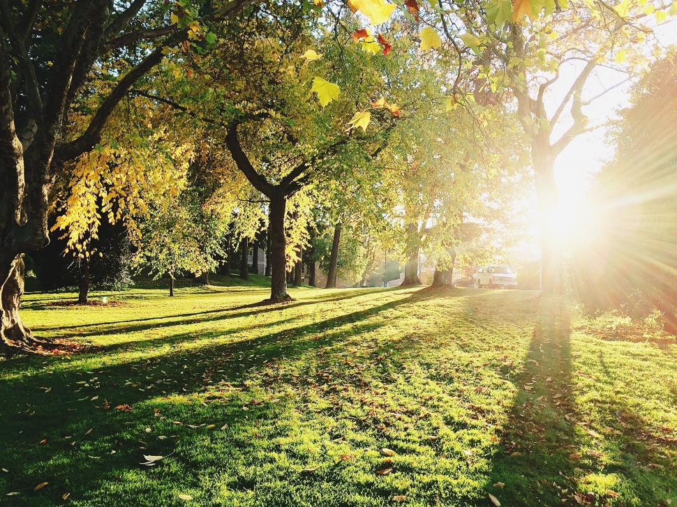
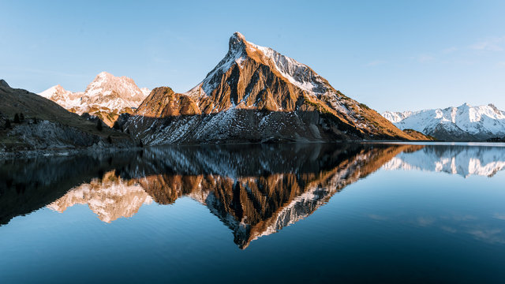
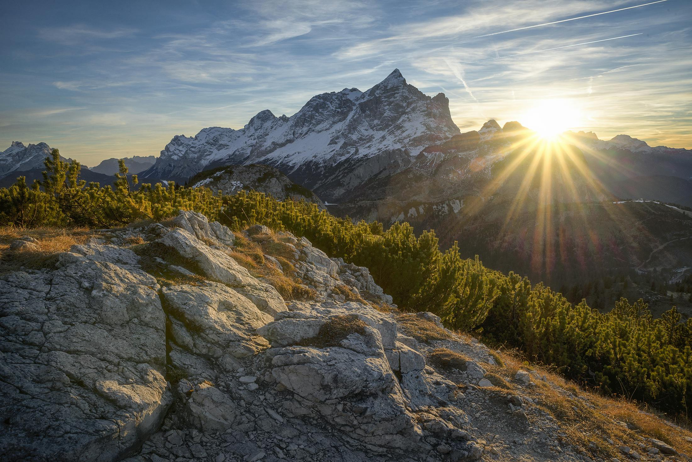

So where did snowboarding as the sport come from? We'll dive into the history of the sport itself and how it came to be. We can do this by looking at a recent RedBull article explaining the roots of the sport and how it went from a simple, niche, and weird thing to becoming the global phenomena it is today. The sport is still relatively young, however, it only grows year by year. The article explores the journey of snowboarding from its early roots in the 1960s to its current global popularity. It starts with a quote from Olympic medalist Mark McMorris, who grew up snowboarding in the flatlands of Canada, proving passion can overcome obstacles.
Snowboarding began in 1965 when Sherman Poppen created a snowboard prototype by bolting skis together. Over the decades, inventors like Dimitrije Milovich helped improve designs, leading to the creation of modern snowboards. The sport gained momentum in the 1980s and 1990s, with companies like Burton, SIMS, and GNU making boards more widely available. It became an Olympic sport in 1998.
Today, snowboarding includes many disciplines like halfpipe, slopestyle, big air, and freeriding. It's also become a cultural movement, with events like the X Games and Red Bull’s Natural Selection Tour showcasing top talent.
The article also highlights the evolution of snowboard filmmaking, especially through Pirate Movie Productions, who mix old-school film with modern drone footage in projects like Under Black Flag. With athletes like Travis Rice, Anna Gasser, and Val Guseli pushing boundaries, snowboarding continues to grow as both a sport and art form.
“I had so much passion for snowboarding that it didn’t matter that I was from the flattest place in Canada. I was going to do it for the rest of my life.” – Mark McMorris
For more information on the article, click HERE.



Want a new spot for some entertaining fun and picnic fun? Rundle Park in Edmonton offers an ideal setting for picnics, featuring expansive green spaces, man-made lakes, and numerous picnic sites equipped with tables and fire pits. Visitors can enjoy amenities such as playgrounds, multi-use trails, and sports facilities, making it perfect for family gatherings and outdoor activities. It helps create a safe environment for everyone. To reach Rundle Park from downtown Edmonton, turn right onto 113 Avenue NW, which leads directly into the park. For exact directions, click HERE.